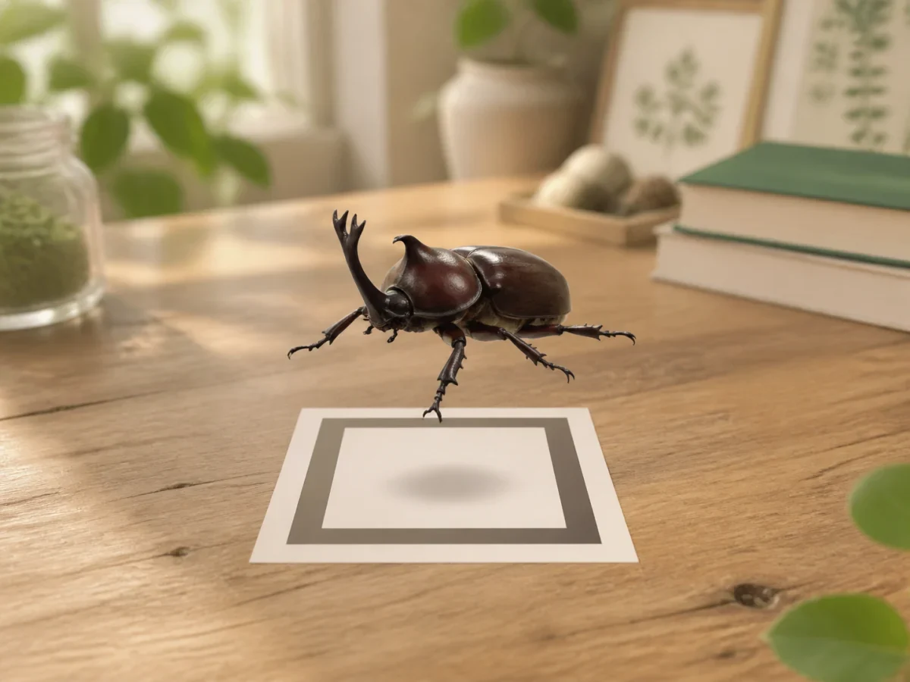

DISCOVER THE LITTLE WORLD
見つけた虫を、
もっと近くで。
野外で出会った昆虫を撮影して、図鑑に記録。対応する昆虫は、実寸大の3DモデルをARでいろいろな角度から観察できます。

撮影から再観察まで
撮影する
見つけた昆虫をカメラで撮影します。
図鑑に記録する
AIが示した候補から昆虫を選び、写真と一緒に記録します。
ARで観察する
対応する昆虫の3Dモデルを表示して、大きさや形を確かめます。
DISCOVER THE LITTLE WORLD
野外で出会った昆虫を撮影して、図鑑に記録。対応する昆虫は、実寸大の3DモデルをARでいろいろな角度から観察できます。

見つけた昆虫をカメラで撮影します。
AIが示した候補から昆虫を選び、写真と一緒に記録します。
対応する昆虫の3Dモデルを表示して、大きさや形を確かめます。